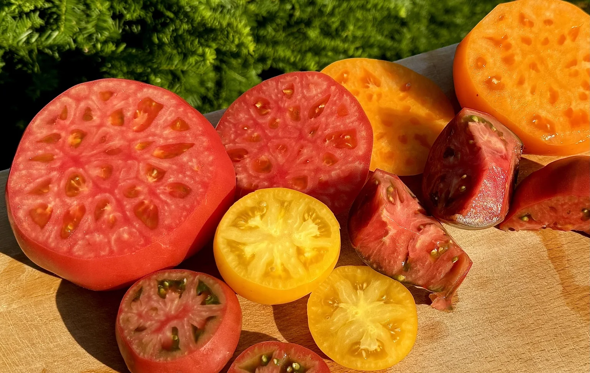

Välkommen till receptsamlingen
Mat att laga.
Recept att bevara.
Gamla favoriter och nya upptäckter, samlade som i ett gammaldags receptarkiv. Bläddra bland recepten och hitta något gott att laga.

Ur vårt kökUr receptsamlingen
Ett recept att börja med
Hämtar recept …
En samling av recept att laga, spara och återvända till.